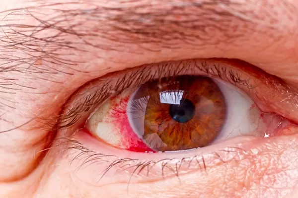

O glaucoma é uma doença ocular que danifica o nervo óptico, geralmente causada pelo aumento da pressão dentro do olho. Esse dano reduz o campo da visão aos poucos e pode causar a cegueira se não for tratado.Como o Glaucoma AconteceLíquido preso: O olho produz um líquido que precisa circular e sair por um canal. Quando esse canal entope, o líquido se acumula e a pressão sobe.Pressão e dano: O excesso de pressão esmaga as fibras do nervo óptico, que levam as imagens do olho para o cérebro.Doença silenciosa: No começo, a pessoa não sente dor nem percebe nada de errado, pois a visão lateral vai sumindo bem devagar.Sintomas e RiscosFalta de aviso: O tipo mais comum não mostra sintomas no início.Visão de túnel: Com o tempo, a pessoa perde a visão dos lados e passa a enxergar como se olhasse por um canudo.Quem corre mais risco: Pessoas com mais de 40 anos, quem tem casos da doença na família ou quem sofre de pressão alta e diabetes.TratamentoSem cura: O dano que já aconteceu na visão não pode ser revertido.Controle: O tratamento serve para baixar a pressão do olho e impedir que a visão piore.Remédios e cirurgia: O uso diário de colírios especiais é a forma mais comum de controle, mas o médico também pode indicar laser ou cirurgia se necessário.Se você ou alguém da sua família tem mais de 40 anos ou histórico da doença,recomendamos agendar uma consulta com um médico oftalmologista para medir a pressão dos olhos.
Não, o glaucoma geralmente não apresenta sintomas no início. A forma mais comum da doença é silenciosa e a perda da visão lateral (periférica) acontece de forma muito lenta, fazendo com que a pessoa não perceba nada de errado por anos. Como a doença se comporta:Descoberta tardia. Quando o paciente nota visão em túnel ou embaçada, o dano no nervo óptico costuma estar avançado.Exceção rara: O tipo menos comum (ângulo fechado) pode causar dor forte repentina, vermelhidão e visão turva, exigindo socorro médico imediato.Confira orientações adicionais e um teste interativo no Tua Saúde.Leia sobre os sinais de alerta com a Dra. Geraldine Ragot.
Maior incidência em pessoas acima de 40 anos, com aumento expressivo após os 60.Histórico Familiar: Parentes de primeiro grau possuem risco genético até quatro vezes maior.Etnia: Pessoas negras têm maior propensão ao glaucoma de ângulo aberto; asiáticas têm mais risco para o de ângulo fechado.Pressão Ocular: Quem apresenta pressão intraocular elevada está sob maior
